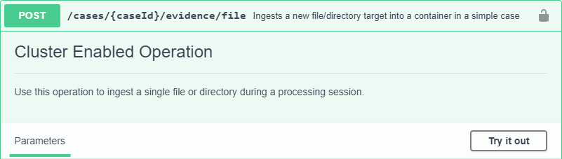

Clustering
Nuix RESTful Service supports clustered installations to enable distributed workloads across multiple nodes within a cluster. When configured as a cluster, requests submitted to REST are managed and distributed across the cluster with no further action from the user.
Clustering Concepts
A clustered environment consists of two or more Nuix RESTful Service instances that have been configured to communicate and share data with each other over a network. Each instance represents a node within the cluster. Nodes are further classified by roles, which are defined during setup and determine what function the node can perform within the cluster. The following two roles are available.
- Producer role: Nodes that are assigned the producer role function as the primary server (base URL) for all calls submitted to the API. Producer nodes are responsible for receiving incoming calls, queuing requests, processing non-cluster-enabled functions, and relaying results from across the cluster back to the user.
- Consumer role: Nodes that are assigned the consumer role are responsible for performing the cluster-enabled requests in the job queue based on the node’s capacity and availability.
As requests are submitted to the cluster, they are picked up and processed immediately. If the cluster is at capacity, the requests will instead be added to a queue and processed by the first consumer node that becomes available or gains additional capacity.
Consumer nodes can accept new requests if the following criteria are met:
- The request is for a cluster-enabled function.
- The request can be performed immediately.
- The case associated with a request is available to the node.
- The node has capacity, which is defined by the following restrictions:
- Worker-based tasks: Limited to one request per node simultaneously.
- Non-worker-based tasks: Can perform multiple requests simultaneously.
- Based on the resources available to the node, it may be capable of performing both types of requests simultaneously.
If any of the criteria cannot be met by a consumer node, the request will remain in the queue until another node within the cluster becomes available.
Note
Communication between nodes is not encrypted by default.Server Tags
To optimize and steer the distribution of requests throughout a cluster, server tags can be implemented to control the type of requests that are performed by specific nodes. Server tags are simple user-defined labels, such as OCR or Worker-Based, that are applied to consumer nodes during clustering setup.
Once configured, requests that are submitted with a specific server tag will be routed to and processed by a node that has a matching tag. Requests submitted without a tag will continue to be processed by the first available consumer node.
Warning
Requests that are submitted with a server tag that does not exist within the cluster will never be processed.
To identify server tags that exist within the cluster before submitting a request, see Viewing the Cluster.
The practice of server tagging can be beneficial if trying to prioritize calls that are submitted to the API. For instance, separating worker-based requests from non-worker-based requests. Functions that require workers, such as ingestion, OCR, and exports can often be long running resource intensive processes. By using server tags, these types of requests can be steered towards dedicated nodes within the cluster that are better provisioned to handle these types of jobs.
Tip
Nodes that have been configured with server tags are not restricted from processing untagged requests. If a request is submitted to the cluster and a tagged node is the first available node to meet all criteria required to accept a request, it will do so.Prerequisites for Creating a Cluster
To set up a Nuix RESTful Service clustered environment, the following prerequisites must be addressed.
- Two or more installed instances of Nuix RESTful Service.
- The IP addresses of all nodes included in the cluster must be known to complete the following configurations.
- Access to Nuix Licensing using any of the following options:
- Networked file storage for shared resources.
- Elasticsearch v7.8.1
Important
Only Elasticsearch based cases are supported within clustered environments.Network Share Requirements
Clustering requires the use of networked file storage to ensure all nodes within the cluster have access to the same data. Before you begin, ensure that a network file share is available and accessible from all nodes included in the Nuix RESTful Service cluster.
Note
The location of all network shares must be accessible using UNC paths.The following directories must be created and configured as individual network shares:
| Share Name | Description |
|---|---|
source data/ |
Location to store raw evidence that has not yet been processed into a case. |
cases/ |
An Elasticsearch based inventory location where cases are created and stored. |
user-data/ |
Location to store artifacts and profiles that are used when processing evidence. The user-data directory is comprised of the following sub-directories that eachstore a different type of artifact. Tip: Create only the subdirectories that will be used in your workflows. |--Digest Lists/|--Imaging Profiles/|--OCR Profiles/|--Processing Profiles/|--Production Profiles/|--Reports/|--Shingle Lists/|--Word Lists/ |
exports/ |
Location to store exports generated by Nuix RESTful Service. |
thumbnails/ |
Location to store thumbnails that are generated within a case. |
scripts/ |
Location to store user-generated scripts for use with Nuix RESTful Service. |
Configuring REST Instances
After all prerequisites have been addressed, use the following procedure to set up a clustered Nuix RESTful Service environment.
Note
This procedure must be performed on each node within the cluster.- Ensure that the instance of Nuix RESTful Service being modified has been stopped.
- Navigate to the settings directory within the Nuix RESTful Service installation.
- Windows:
<InstalDir>/Nuix/Nuix RESTful Service/settings - Linux:
/opt/nuix-restful-service/settings
- Windows:
- Open the
application.propertiesfile within a text editor. - Modify the file by configuring the following properties to enable clustering and identify the role of the node within the cluster.
-
Enable the node to participate in the cluster by adding the following property:
cluster.enabled=true -
Add one of the following properties to specify the node’s role within the cluster:
- Producer role: The primary server for all calls submitted to the API. Producer nodes are responsible for receiving incoming calls, queuing requests, and relaying results from across the cluster back to the user.
- Consumer role: Consumer nodes are responsible for performing the queued requests based on the node’s availability.
cluster.role.producer=true cluster.role.consumer=falseNote: The cluster must contain at least one producer and consumer node. -
Optionally, define a server tag that can be used to steer requests to this specific node.
server.tags=Worker-basedIf the node is expected to receive multiple types of requests, a comma separated list of tags can also be defined:
server.tags=Worker-based,OCR,Export -
Update the values of the following existing properties to reflect the UNC paths of the network share locations that were previously created .
exportsFolder=\\10.130.138.177\exports inventoryLocations=\\10.130.138.177\cases searchThumbnailsExportDirectory=\\10.130.138.177\thumbnails userScriptsLocation=\\10.130.138.177\scripts\ nuix.engine.userDataDirs=\\10.130.138.177\user-data\ -
Add the following property to identify nodes within the cluster. Provide a comma-separated list of IP addresses that represent all nodes included within the cluster.
hazelcastTcpIpMembers=<IPofNode1>,<IPofNode2>,<IPofNode3> -
Verify that the
publicURLproperty is set to an address that is accessible from all other nodes within the cluster.
-
- Save and exit the file.
- Restart Nuix RESTful Service.
- Repeat this procedure until all nodes within the cluster have been configured.
Viewing the Cluster
After all nodes within your environment have been configured for clustering, you can check your cluster by submitting a GET request to the /cluster endpoint. This request should be submitted to a node within the cluster that has been configured with the producer role.
cURL
curl -L -X GET 'http://10.30.100.58:8080/nuix-restful-service/svc/v1/cluster' \
-H 'nuix-auth-token: 49e225d7-b88d-4d1b-9cbc-296e83706a60'
After submitting the request, details about each available node are returned, including:
- The name and location of the node.
- The port where the node is operating.
- Any server tags associated with the node.
- A unique server GUID, useful for identifying a specific node.
Response
{
"nodes": [
{
"hostAddress": "192.168.7.32",
"hostName": "node01.nuix.com",
"port": 5601,
"details": {
"serverId": "637edbff-3e1c-4f63-921e-da022a763fbf",
"publicURL": "http://10.30.100.58:8080",
"name": "REST-Node-1",
"tags": [OCR,Export],
"guid": "210ee909-3cdf-3f3a-b973-2cf4d7c7aea2"
}
},
{
"hostAddress": "192.168.7.12",
"hostName": "node02.nuix.com",
"port": 5602,
"details": {
"serverId": "432iunff-5h1a-8j67-738b-ic9344f643unf",
"publicURL": "http://10.30.100.83:8080",
"name": "REST-Node-2",
"tags": [Worker-based],
"guid": "468uj828-7uct-6h1s-m878-5hg5d9v6ema1"
}
}
]
}
Submitting Requests to the Cluster
When operating within a clustered Nuix RESTful Service environment, the process of submitting requests is no different from interacting with a single instance of Nuix REST.
To get started, you need to know the location of a node within the cluster that has been designated as a Producer. If multiple producers are available, any one can be used. Once identified, all calls to the cluster should be made to that node.
After a request is received, if the call is for a cluster-enabled function, the request will be added to the queue for the first available consumer node to pick up. If the call is for a non-cluster-enabled function, the producer node will simply perform the request itself.
Cluster-enabled functions are those that can be run asynchronously by any consumer node within the cluster. These functions are identified within the embedded API reference documentation (localhost:8080/nuix-restful-service/svc/docs) using the Cluster Enabled Operation label.

Submitting Requests with Server Tags
If server tags have been implemented within your cluster, you can use them in your calls by defining the following RAW data in the body of your requests.
--data-raw
'{
"restClusterSettings": {
"nodeTags": {
"defaultTags": ["Worker-based"]
}
},
}'